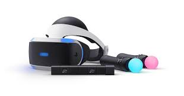

3.2.3 Diseño del prototipo.
-
Un prototipo es una representación simplificada de un producto o
servicio que se quiere crear. Su objetivo es probar y validar las
ideas y conceptos antes de invertir tiempo y recursos en el
desarrollo final. Un prototipo puede tener diferentes niveles de
fidelidad, desde un boceto en papel hasta un modelo funcional que se asemeja al producto final.
Los prototipos se pueden clasificar según el grado de detalle y
realismo que presentan, es decir, su fidelidad. Así, atendiendo
al grado de fidelidad podemos distinguir:
Prototipos de baja o media fidelidad:
los de baja fidelidad
son los más rápidos y baratos de hacer. Se usan para explorar y
comunicar las ideas básicas y la estructura del producto.
Suelen ser dibujos, esquemas o maquetas hechas con materiales simples
. Los de media fidelidad son más elaborados y detallados que los anteriores.
Se usan para definir y testear las funcionalidades y el diseño del producto.
Suelen ser modelos digitales o físicos que incorporan algunos elementos visuales y de interacción.
Prototipos de alta fidelidad:
son los más cercanos al producto final. Se usan para validar y refinar el producto con usuarios reales. Suelen ser modelos digitales o físicos que reproducen fielmente el aspecto, el comportamiento y la experiencia del producto
-


Pasos para diseñar un prototipo
Definir el objetivo del prototipo:
se debe tener claro qué se quiere probar o validar con el prototipo, a quién va dirigido y qué tipo de feedback se espera obtener.
Elegir el nivel de fidelidad adecuado:
se debe escoger el nivel de detalle y realismo que mejor se adapte al objetivo del prototipo, al tiempo y recursos disponibles y al grado de madurez del proyecto.
Seleccionar las herramientas y materiales:
se debe escoger las herramientas y materiales que permitan crear el prototipo de forma rápida y eficiente, según el nivel de fidelidad elegido. Pueden ser desde papel y lápiz hasta software especializado o impresoras 3D. En este sentido, hay software especializado que puedes usar para crear tu prototipo, entre los que puedes considerar Mockplus RP, Sketch, Origami Studio, Invision, Adobe XD o Figma.
-
Crear el prototipo:
se debe plasmar las ideas y conceptos en el prototipo, siguiendo los principios de diseño centrado en el usuario y aplicando técnicas de creatividad e iteración.
Evaluar el prototipo:
se debe testear el prototipo con usuarios potenciales o expertos, recoger sus opiniones y observar su comportamiento.
-